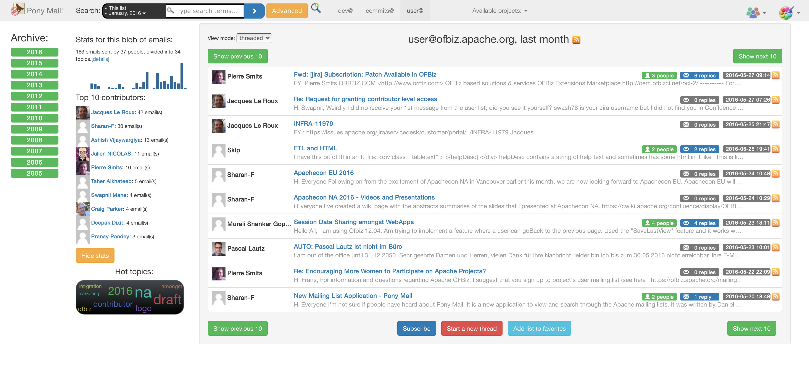
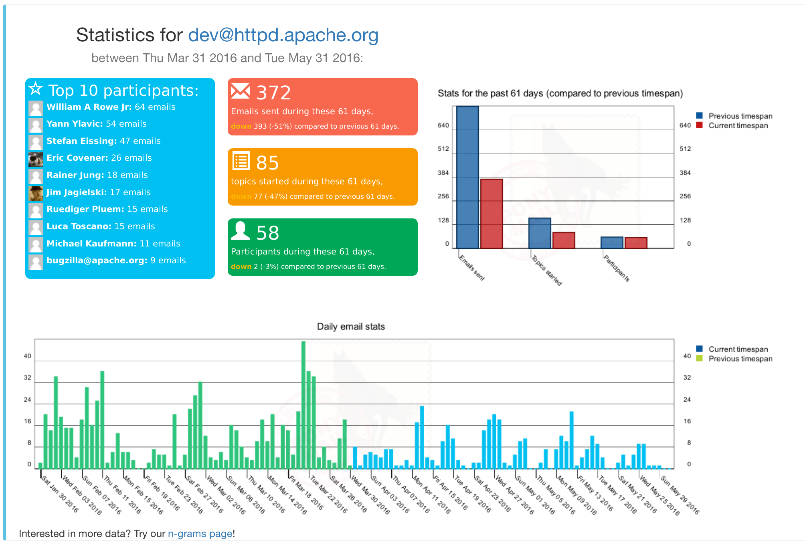
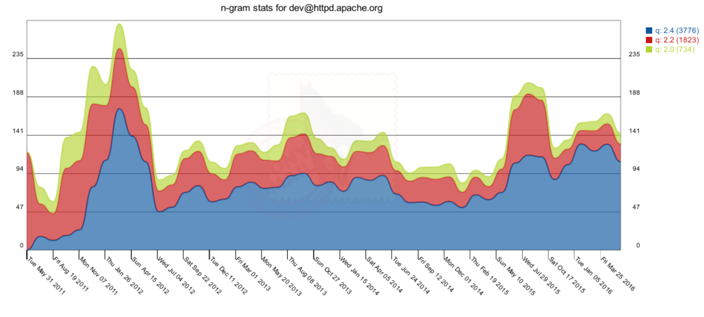

Apache Pony Mail (Incubating) is a web-based mail archive browser built to scale to millions of archived messages with hundreds of requests per second. It allows you to browse, search, and interact with mailing lists including creating replies to mailing list threads.
Apache Pony Mail uses OAuth2 (Google, GitHub, Facebook etc) for authentication to allow viewing private lists, and uses ElasticSearch for storage and searching. Licensed under the Apache License 2.0 and undergoing Incubation at the Apache Software Foundation (ASF).



See https://lists.apache.org.org for a live demo; Pony Mail is currently running on the full mail archives of all Apache projects.
Pony Mail works in both public, private and mixed-mode, allowing you to have one unified place for all your communication, both public and private.
Pony Mail has been built for and tested with the mail archives of the Apache Software Foundation, which span more than 15 million emails sent across more than 20 years. To put things into perspective, importing all this on a modern machine (2xSSD with 64GB RAM) took around 12 hours and resulted in a performance at around 100 archive search requests per second per ES node, depending on mailing list size and available bandwidth.
This is a list of what we would love to get done:
Apache Pony Mail (Incubating) is an effort undergoing incubation at The Apache Software Foundation (ASF), sponsored by the Apache Incubator. Incubation is required of all newly accepted projects until a further review indicates that the infrastructure, communications, and decision making process have stabilized in a manner consistent with other successful ASF projects. While incubation status is not necessarily a reflection of the completeness or stability of the code, it does indicate that the project has yet to be fully endorsed by the ASF.